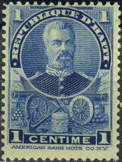
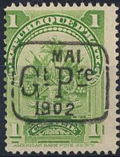
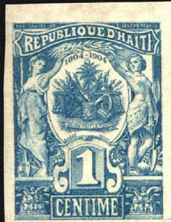
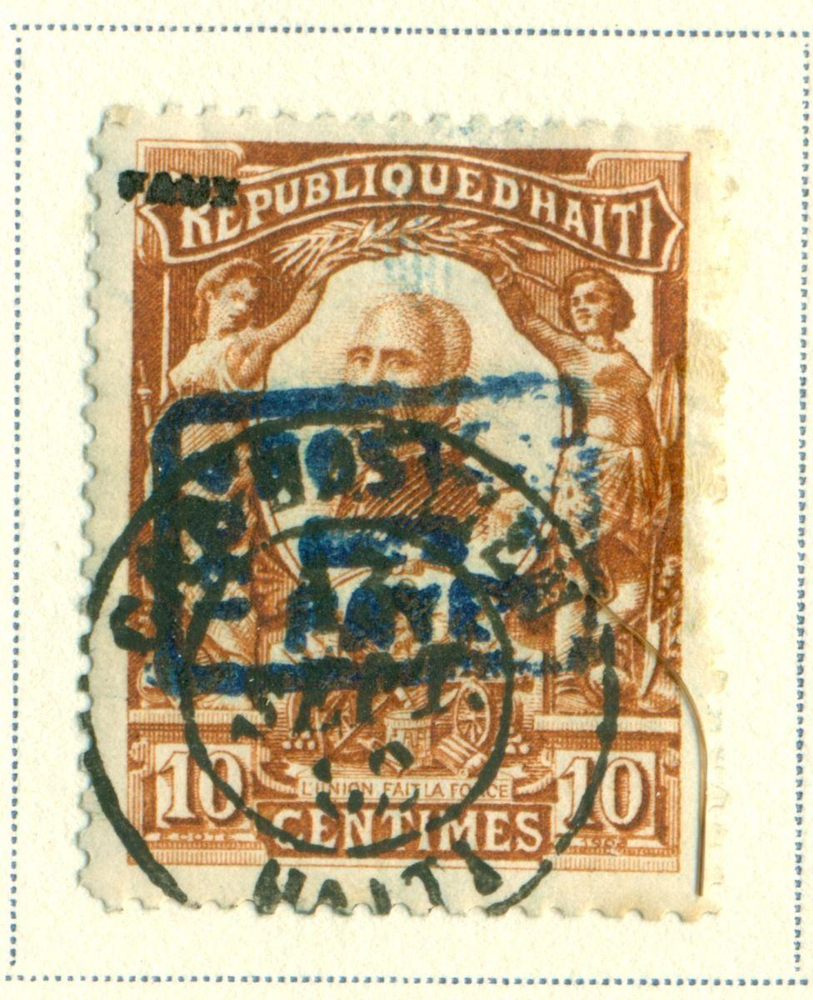
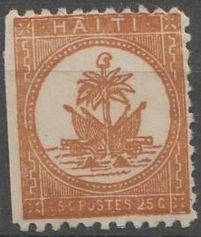

Return To Catalogue - Haiti 1881-1898
Note: on my website many of the
pictures can not be seen! They are of course present in the
catalogue;
contact me if you want to purchase it.
President Simon Sam


1 c blue 2 c orange 3 c green 5 c brown 7 c black 20 c black 50 c red 1 G lilac Arms
1 c green (1899) 2 c red (1899) 4 c red 5 c blue (1899) 8 c red 10 c orange 15 c olive
Value of the stamps |
|||
vc = very common c = common * = not so common ** = uncommon |
*** = very uncommon R = rare RR = very rare RRR = extremely rare |
||
| Value | Unused | Used | Remarks |
President Simon Sam |
|||
| 1 c | c | c | |
| 2 c | * | * | |
| 3 c | * | * | |
| 5 c | * | * | |
| 7 c | * | * | |
| 20 c | ** | ** | |
| 50 c | * | * | |
| 1 G | *** | *** | |
Arms |
|||
| 1 c | c | c | |
| 2 c | c | c | |
| 4 c | * | * | |
| 5 c | c | c | |
| 8 c | * | * | |
| 10 c | * | * | |
| 15 c | ** | ** | |
All these stamps exist with a elliptic overprint with inscription 'SERVICE EXTERIEUR PROVISOIRE EN PIASTRES FORTES' (issued in 1906, value: ** to R). Forged overprints exist.

Inverted overprint (presumably genuine)
A rectangular overprint with inscription 'GL O.Z. 7 FEV 1914 =' was issued on the 8 c red in 1914 (RR).

'GL O.Z. 7 FEV 1914 =' on 8 c red
Also in 1902 an overprint 'MAI Gt Pre 1902' was issued (value ** to RR), example:


The text 'Gt Pre' means 'Gouvernement Provisoire' (provisional government). Three types of this overprint exist. Only the first type was ment for postal use (with a small '0' in '1902'). The other two types were printed for stamp dealers (they also exist cancelled to order). I know that the forger Fournier made forgeries of these overprints.

(Left: forged violet overprint; right: genuine overprint)
Forged Fournier overprint; image obtained from 'A Fournier Album
of Philatelic Forgeries', reduced size

Fournier forged overprint.
1 c green 2 c red and black 5 c blue and black 7 c lilac and black 10 c yellow and black 20 c grey and black 50 c olive and black
Value of the stamps |
|||
vc = very common c = common * = not so common ** = uncommon |
*** = very uncommon R = rare RR = very rare RRR = extremely rare |
||
| Value | Unused | Used | Remarks |
| 1 c | * | * | |
| 2 c | * | * | |
| 5 c | * | * | |
| 7 c | c | c | |
| 10 c | * | * | |
| 20 c | c | c | |
| 50 c | * | * | |
There are many forged stamps. The design is slightly blurrer when compared to genuine stamps.
Overprinted 'POSTE PAYE 1804 1904'
All these stamps exist with overprint 'POSTE PAYE 1804 1904'. Value: ** (the 5 c with red surcharge: RRR).

Two genuine and one forged overprint.
Reprints exist. Forgeries also exist (also with misplaced center pieces).

Imperforate stamps, probably reprints or forgeries
The stamp dealer Louis Pasche of Lausanne offers forgeries of four values (I only know for sure that the 7 c value was included); 10 sets for 10 Swiss Francs or 100 sets for 80 Swiss Francs. This was done in 1928 in a pricelist he send to several clients. He also offers forgeries of Serbia (1904), Surinam (1893) and Transvaal. See: http://www.filatelia.fi/forglinks/exhibit/paschestamps.jpg.

1 c green 2 c red 5 c blue 10 c brown 20 c orange 50 c lilac Surcharged in a hexagonal (1 c) or heptagonal (2 c); 1906


(With inverted surcharge)
1 c (red or black) on 5 c blue 1 c on 10 c brown 1 c (red or black) on 20 c orange 2 c (red) on 10 c brown 2 c on 20 c orange 2 c (black or red) on 50 c brown Surcharged in a large rectangle '1' (red) on 5 c blue (1915) '1' (blue) on 10 c brown '1' (blue) on 20 c orange '1' (blue) on 50 c brown (exists with red surcharge; rare)
Value of the stamps |
|||
vc = very common c = common * = not so common ** = uncommon |
*** = very uncommon R = rare RR = very rare RRR = extremely rare |
||
| Value | Unused | Used | Remarks |
| 1 c | c | vc | |
| 2 c | c | vc | |
| 5 c | vc | vc | |
| 10 c | c | c | |
| 20 c | c | c | |
| 50 c | * | * | |
Surcharged in a hexagonal (1906) or heptagonal |
|||
| 1 c on 5 c | * | * | |
| 1 c on 10 c | * | * | |
| 1 c on 20 c | * | * | |
| 2 c on 10 c | * | * | |
| 2 c on 20 c | * | * | Inverted overprint: ** |
| 2 c on 50 c | * | * | |
Surcharged in rectangle |
|||
| 1 on 5 c | *** | *** | |
| 1 on 10 c | * | * | |
| 1 on 20 c | *** | *** | |
| 1 on 50 c | * | * | Red surcharge: RR |
These stamps exist with overprint 'POSTE PAYE 1804 1904' (value: *), example:

I presume these two overprints are genuine.


On 20 c imperforate(?) stamp and inverted overprint on 1 c
Forged overprints exist.
A rectangular overprint with inscription 'GL O.Z. 7 FEV 1914 =' was issued on the values 1 c green, 2 c red, 5 c blue, 10 c brown, 20 c orange, and 50 c brown in 1914. A similar overprint with inscription 'GL O.Z. 7 FEV 1914 7 CENT' was applied on the values 20 c and 50 c. On this last overprint a further surcharge was applied in 1917 in the values '5 cts GOURDE' on 7 c on 20 c and on 7 c on 50 c (both in violet colour).
Forged Fournier overprint; image obtained from 'A Fournier Album
of Philatelic Forgeries', reduced size.

Other Fournier forgeries. Fournier probably only applied the
forged overprint and cancel. The stamps are probably genuine or
reprints.
Reprints were made by the printer of the stamps E.Cote, or by Louis Dumonteuil d'Olivera or
René Carème (all located in Paris)
From the court case concerning the North Borneo forgeries of the
stamp forger Lowden at
http://www.oldbaileyonline.org/browse.jsp?path=sessionsPapers%2F19090622.xml,
we can find out how reprints and forgeries of these stamps found
their way in the stamp market:
"Carame said he was the printer of the 1904 issue of
Haiti stamps, which had been sold by Mons.
Dumonteuil. He also said he had printed some
Somali Coast stamps. He produced what I should say were printer's
proofs of other issues of Haiti, which made it look extremely
probable that the man had got the entree to somebody who was able
to get the Haiti plates, and we had no reason to doubt him."
Note 1: The name of René Carème is consistently spelt as Rene
Carame.
Note 2: The person Dumonteuil (Louis Dumonteuil
d'Olivera) mentioned in the proceedings is a known stamp forger
in Paris (see Focus on Forgeries, by V.E.Tyler). He was involved
in forged Haiti and Colombia stamps (and probably many more).
Note 3: Tyler in 'Focus on Forgeries' says these stamps were
printed by E.Cote (spelt differently as M.Côte on
http://www.stampprinters.info/SPI_country_france.htm, but the
stamps themselves have 'E.COTE' in the design under the left
value label).
Images of counterfeit stamps of this issue can also be found at:
http://www.archive.org/details/CounterfeitHaitianPostageStamps-1904.
Tyler in 'Focus on Forgeries' furthermore described two deceptive forgeries; one of the 1 c value and one of the 50 c value. In the 50 c forgery the 'A' of 'FAIT' does not touch the design above it (in the genuine 50 c it does).
Inverted overprint (presumably genuine)
1 c blue 2 c orange 3 c green 4 c red 5 c brown 7 c black 8 c red 10 c orange 15 c olive 20 c black 50 c brown 1 G lilac 1 G green 2 G red 5 G blue
The 50 c and 1 G lilac exist with surcharge '2 cts Gourde' in a rectangle (issued in 1917); value: RR.


Value in 'CENTIMES DE PIASTRES' 1 c green (arms) 2 c red (Nord Alexis) 3 c brown (building) 3 c orange (building, 1913) 4 c red (building) 4 c olive (building, 1913) 5 c blue (Nord Alexis) 7 c grey (building) 7 c red (building, 1913) 8 c red 8 c green (1913) 10 c orange (building) 10 c brown (building, 1913) 15 c olive (building) 15 c yellow (building, 1913) 20 c green (Nord Alexis) 50 c red (arms) 50 c orange (arms, 1913) 1 Pi lilac (building) 1 Pi red (building, 1913) Value in 'CENTIMES DE GOURDE'
(Reduced size)
1 c blue (Nord Alexis) 2 c orange (arms) 2 c yellow (arms) 3 c grey (Nord Alexis) 7 c green (arms) Surcharged in a large rectangle '1' (red) on 7 c grey (1915) Surcharged 1 c on 4 c red (1917) 1 c (red) on 4 c olive (1917) 1 c on 7 c red (1917) 1 c (red) on 15 c yellow (1917) 1 c (black or red) on 20 c green (1917) 1 c (blue) on 10 c orange (1917) 1 c (black or red) on 50 c red (1917) 1 c on 50 c orange (1917) 2 c (red) on 3 c brown (1917) 2 c (red) on 3 c orange (1917) 2 c (red) on 8 c red (1917) 2 c (red) on 8 c green (1917) 2 c on 10 c brown (1917) 2 c (red) on 15 c olive (1917) 2 c (red) on 15 c yellow (1917) 2 c (red) on 20 c green (1917) 5 c on 10 c brown (1917) 5 c (red) on 15 c yellow (1917) Overprinted and surcharged 'SD2' in a rectangle on 1 Pi lilac
'GL O.Z. 7 FEV. 1914' on 50 c orange
'BL O.Z. 1 CENT DE PIASTRE 7n FEV. 1914' on 1 Pi red

Inverted red '2 cts GOURDE' on 3 c orange
A rectangular overprint with inscription 'GL O.Z. 7 FEV 1914 =' was issued on many of these stamps in 1914. A similar overprint 'GL O.Z. 1 CENT DE PIASTRE 7 FEV 1914' was applied to the values 50 c red, 50 c orange, 1 Pi lilac and 1 Pi red. A further surcharge '1 1 1 1 CT GOURDE' (red) exist on the values 15 c olive and 20 c green and was applied in 1917. The same surcharge also exist on the1 Pi lilac (surcharge in black or red). A similar surcharge of 5 c on 1 Pi red also exist. A violet 2 c surcharge was also applied on the 'GL O.Z. 7 FEV 1914' stamps on the values 4 c, a green 2 c surcharge on both the 8 c values, a green or red 2 c surcharge on both the 50 c values and a red 2 c surcharge on both the 1 Pi values. A red '3 cts GOURDE' in a rectangle surcharge was also applied on the 'GL O.Z. 7 FEV 1914' stamps on the values 3 c brown and 7 c red. A '5 cts GOURDE' surcharge was also applied on the 'GL O.Z. 7 FEV 1914' stamps in the colour red on both 3 c values, in red on both the 4 c values, in violet on both the 7 c values, in violet on the 10 c orange value and in violet on the 15 c yellow. A lilac '5 CTS PIASTRE' in a rectangle surcharge was also applied on the 'GL O.Z. 7 FEV 1914' 10 c orange stamp.
Value in 'CENTIMES DE PIASTRE'

2 c red and black 5 c blue and black 20 c green and black Value in 'CENTIME DE GOURDE'
1 c brown and black Surcharged 1 c on 20 c green and black (1917, rare)

A rectangular overprint with inscription 'GL O.Z. 7 FEV 1914 =' was issued on the 20 c green and black in 1914. A further overprint was applied in 1917: '1 1 1 1 CT GOURDE' in red on the value 20 c. This rectangular overprint also exists with a further overprint 2 c red on 20 c.
Value in 'CENTIMES DE PIASTRE' 5 c blue Value in 'CENTIMES DE GOURDE' 1 c red 2 c orange
Overprinted with inscription 'GL O.Z. 7 FEV. 1914'
All three above stamps exist with a rectangular overprint with inscription 'GL O.Z. 7 FEV 1914' (issued in 1914).
Value in 'CENTIMES DE PIASTRE'
1 c green and black 3 c olive and black 5 c blue and black 7 c orange and lback 10 c brown and black 15 c grey and black 20 c brown and black Value in 'CENTIMES DE GOURDE' 2 c yellow and black 5 c green and black 7 c red and black
2 c blue 5 c brown 10 c orange 50 c grey Overprinted 'MAI Gt Pre 1902'

With inverted overprint
2 c blue 5 c brown 10 c orange 50 c grey Overprinted 'GL O.Z. 7 FEV 1914 ====' 5 c brown 10 c orange 50 c grey
2 c red 5 c blue 10 c violet 50 c olive Overprinted 'GL O.Z. 7 FEV 1914 ====' 2 c red 5 c blue 10 c violet 50 c olive Surcharged (1917) 'POSTES - 5 CTS GOURDE' on 50 c olive Overprinted 'GL O.Z. 7 FEV 1914 ====' and surcharged (1917) 'POSTES - 5 CTS GOURDE' on 10 c violet 'POSTES - 5 CTS GOURDE' 50 c olive
The last three overprinted stamps are actually postage stamps and not postage due stamps.
Arms in a circle, 'HAITI' written on top, value below, two
different types of bogus stamps
I've even seen another type with the hat on top of the tree pointing to the right instead of the left:


I've seen the values 1 F black, 1 F brown and 1 F red.

I've seen 5 c red, 5 c black, 5 c brown, 5 c green and 5 c light-blue.
{kind=link}
{kind=link}